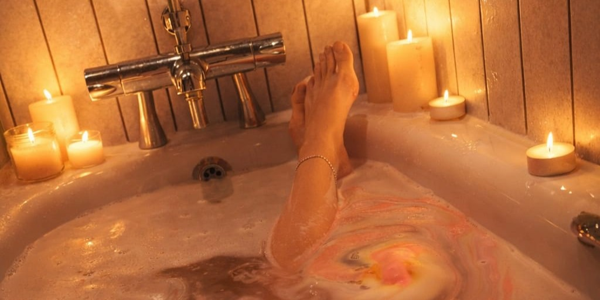

Imagine walking into a warm bathroom 🛁 Soft light 🕯️ Quiet music. Steam in the air 🫧 The bath is ready. You step in, and the warmth wraps around you. For a moment, you don’t have to do anything. You can just be 💙
This simple moment feels calming for a reason. Water has a quiet effect on the body and mind. It helps slow your breathing, relax your muscles, and settle your system. Warm water brings your body into a calmer state, often called “rest and digest.” Your heart rate slows, tension drops, and your body starts to feel safe again. It also helps your muscles release stored tension. That’s why you often feel lighter or sleepy after a bath or shower. Even a short shower can help lower stress levels. There is also something simple and symbolic about water. It can feel like washing the day away. A small reset.
Simple Water Rituals for Relaxation
You don’t need anything fancy. Small moments with water can help more than you think.
1. Hand Soak. Run warm water over your hands or use a small bowl. Focus on the feeling. Simple, but grounding.
2. Foot Bath. Soak your feet in warm water for 10–15 minutes. Add salts if you want, but it’s not necessary. It helps your whole body relax.
3. Listen to Water.The sound of water can calm your mind. A shower, a tap, or even rain. Close your eyes and just listen for a minute.
4. Drink Water Slowly.Take a glass of water and slow down. Sip it, don’t rush. It helps you come back to the present moment.
5. Shower Reset.Even a short shower can help. Let the water run over you and imagine the stress washing away.
Water works in simple ways. You don’t need a perfect setup.
Other Things That Can Help
1. Drinks ☕A warm tea or a cold drink with berries can make the moment feel more calming. Keep it simple.
2. Scents.If you like it, use a small amount of real essential oil. Steam helps carry the scent and relax your body.
3. Lighting🕯️Soft light or one candle is enough. No need to overdo it.
4. Sound 🎶Quiet music or nature sounds can help you slow down.
5. Warmth After.Wrap yourself in a towel or blanket. Stay warm and relaxed.
You don’t need a lot. Just a few small things done with intention. Water is simple, but powerful. It helps you pause, reset, and feel a bit more like yourself again. That’s enough.💗